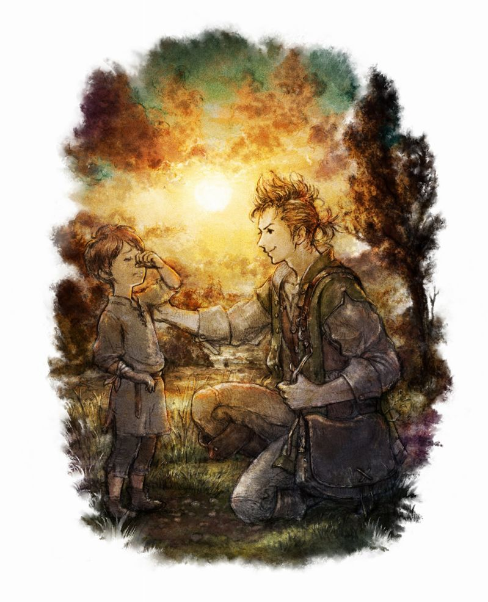
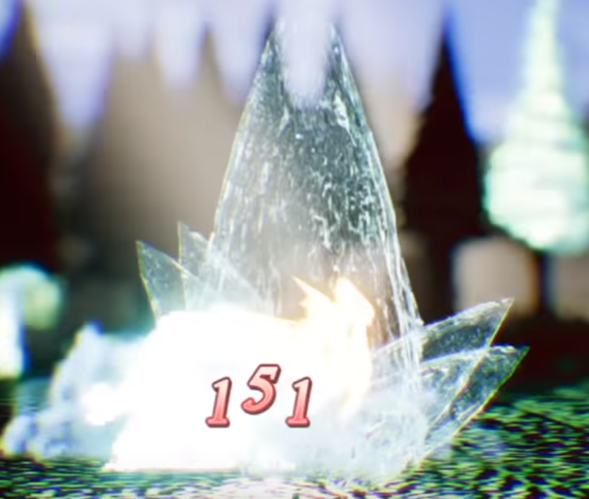

主角們的冒險，即將揭開序幕…
八位主角，八個冒險。
在奧魯斯特拉大陸，擁有不同能力的八位主角正展開一場新的冒險。
玩家將成為其中一位主角，運用各自的技能，開始探索旅程，與敵人對戰。
成為商人亦或討伐叛徒的戰士，想去哪裡、和誰結成盟友，全部由玩家選擇。
舞孃的魅力引誘追求者們互相對戰，藥師既能調製治療盟友的道具，也能製出爆炸攻擊。
旅路上每一個路口、每一個選擇，都引領旅人經歷獨一無二的冒險，往哪方，由你掌握。
『OCTOPATH TRAVELER』免費體驗版 公開下載中
*日文/英文免費體驗版的遊戲數據只能傳到日文/英文完整版
立即下載，展開旅程－
Alfyn Greengrass／亞芬．古林格拉斯職業:藥師CV:關智一／Greg Chun |
|||
Alfyn Greengrass／亞芬．古林格拉斯

職業技能
|
応急手当／急救措施
|
味方単体にHP回復の効果を与える | 使一位友方恢復HP |
|---|---|---|
|
氷柱／冰柱

|
敵単体に氷属性のダメージを与える | 給予單一敵人「冰屬性」的傷害 |
| 健全化／健全化 | 味方単体に状態異常無効の効果を2ターン付与 | 給予一位友方2回合「異常狀態無效」的效果 |
| 大切断／大切斷 | 敵単体に斧でダメージを与える | 給予單一敵人「斧」的傷害 |
| 毒処方／毒處方 | 敵単体に毒の効果を2ターン付与 | 給予單一敵人2回合「毒」的效果 |
| 復活手当／復活措施 | 味方単体を復活させる | 使一位友方復活 |
| 死中活擊断／死中活擊斷 | 敵全体に斧でダメージを与える。自身の残りHPが低いほど大ダメージ | 給予敵方全體「斧」的傷害。自己剩下的HP越低傷害就越高 |
| 霊薬公ドーターの恩恵／ 靈藥公杜塔的恩惠 |
奥義。味方単体に、アイテムの効力を全体化する効果を3ターン付与 | 奧義。使一位友方在3回合期間內獲得「單一對象的道具的效力變為全體化」的效果。 |